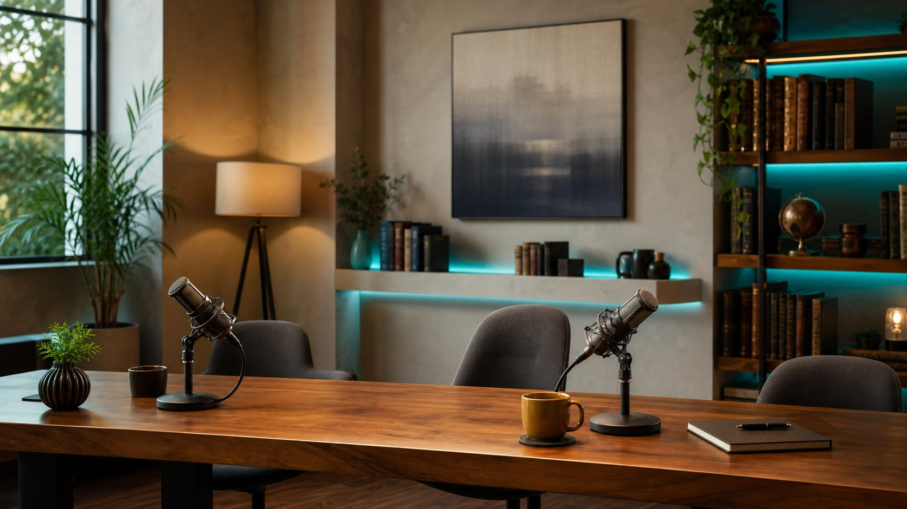

هذا الشريط يشغّل خليطًا صوتيًا سابقًا جزئيًا (output/episode-01.mp3). الحلقة الكاملة الحالية — 50 لقطة بثلاثة أصوات وكابشن متزامن — في المشغّل الكامل. (إعادة توليد الخليط تحتاج ffmpeg، غير المتاح هنا.)

اضغط ▶ على الشريط الصوتي لتشغيل الحلقة